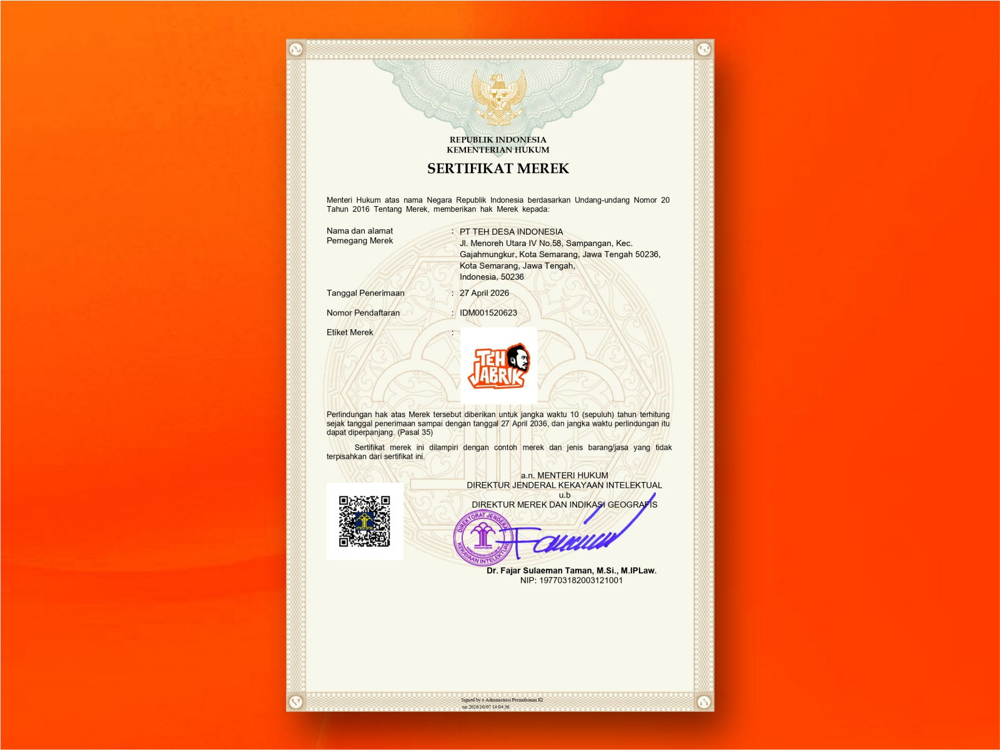
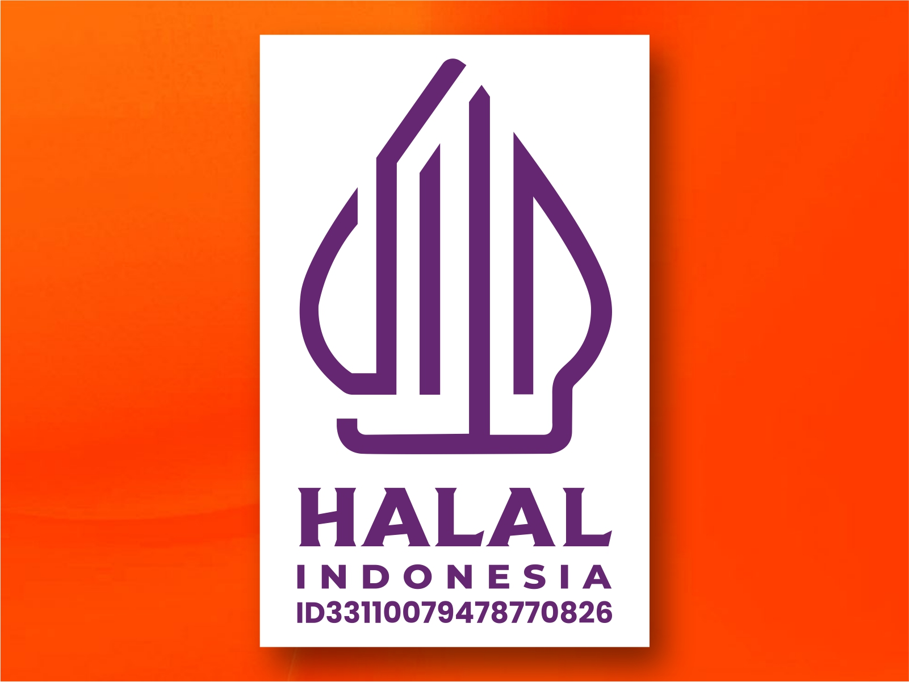
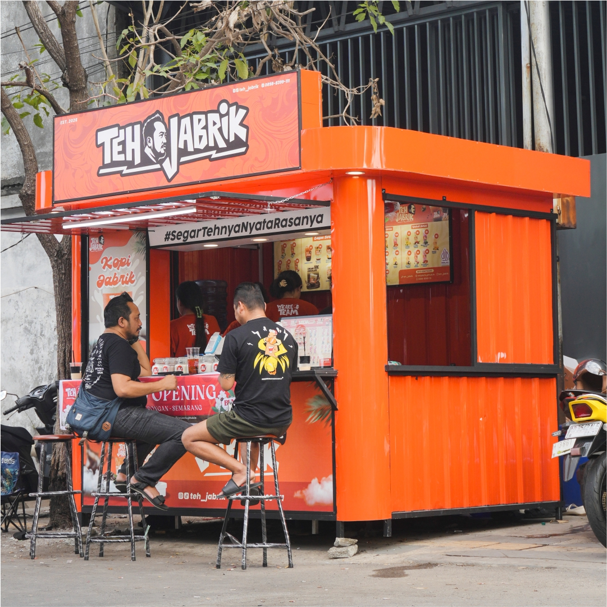

Teh Jabrik, Peluang Usaha Es Teh Kekinian dengan Konsep Kemitraan
Teh Jabrik merupakan brand minuman es teh yang membuka peluang kemitraan bagi Anda yang ingin memulai bisnis minuman kekinian. Dengan konsep usaha yang praktis, pilihan menu beragam, standar resep, dan sistem operasional yang telah disiapkan, Teh Jabrik membantu calon mitra memulai usaha tanpa harus membangun brand dari nol.
Legalitas Teh Jabrik
Kemitraan yang jelas dimulai dari legalitas yang jelas. Klik gambar untuk memperbesar.


Paket Kemitraan
Mulai bisnis minuman kekinian dengan paket usaha es teh yang mencakup booth container, peralatan produksi, bahan baku awal, 34 pilihan menu, standar resep, pelatihan karyawan, dan materi promosi pembukaan. Hubungi admin Teh Jabrik untuk informasi investasi dan penawaran kemitraan terbaru.

Yang Anda dapatkan
- Booth container dengan branding Teh Jabrik
- Peralatan produksi dan penyajian
- Stok bahan baku awal
- Akses 34 menu dan standar resep
- Pelatihan operasional dan SOP
- Materi promosi untuk pembukaan
Investasi
Keuntungan Bergabung Menjadi Mitra Teh Jabrik
Booth langsung jalan
Container sudah lengkap, tinggal pilih lokasi dan buka.
Modal lebih terukur
Isi paket jelas, jadi kebutuhan dana bisa dihitung dari awal.
Menu banyak pilihan
34 varian rasa untuk semua selera pelanggan.
Tanpa pengalaman
Pelatihan dan SOP membuat pemula pun bisa langsung bekerja.
Dibantu promosi
Materi pembukaan dan panduan promosi untuk menarik pelanggan pertama.
Brand konsisten
Tampilan dan rasa seragam, jadi pelanggan mudah mengenali.
Pasokan bahan baku
Bahan baku bisa dipesan langsung, jadi stok lebih mudah dijaga.
Utama atau sampingan
Bisa dijalankan sebagai usaha utama maupun usaha sampingan.
Booth Container Es Teh Modern Teh Jabrik
Booth container Teh Jabrik dirancang dengan tampilan menarik dan identitas brand yang mudah dikenali. Konsep booth ini mendukung usaha minuman takeaway sehingga mitra dapat menjalankan bisnis es teh dengan konsep penjualan yang praktis.
Pertanyaan yang sering diajukan
Apakah pemula bisa menjalankan usaha Teh Jabrik?
Bisa. Teh Jabrik menyediakan pelatihan operasional dan SOP untuk membantu mitra memahami proses persiapan, produksi, hingga penjualan minuman.
Bagaimana cara mendaftar menjadi mitra Teh Jabrik?
Anda dapat mengisi formulir pendaftaran pada website Teh Jabrik atau menghubungi admin melalui WhatsApp untuk mendapatkan informasi mengenai peluang kemitraan dan proses pendaftaran.
Berapa biaya kemitraannya?
Harga mengikuti paket dan lokasi. Hubungi admin lewat form di bawah untuk mendapat rincian terbaru.
Bisakah saya memilih lokasi booth sendiri?
Bisa. Tim kami akan membantu menilai apakah lokasi Anda cocok sebelum booth dipasang.
Berapa lama dari daftar sampai buka?
Waktunya tergantung lokasi dan kesiapan Anda. Admin akan memberi perkiraan jadwal setelah Anda menghubungi kami.
Daftar Kemitraan Es Teh Teh Jabrik Sekarang
Tertarik memulai usaha es teh atau mencari peluang bisnis minuman kekinian? Hubungi tim Teh Jabrik untuk mendapatkan informasi paket kemitraan, persyaratan, pilihan lokasi, dan proses pendaftaran menjadi mitra.
WhatsApp admin: +62 898-8399-111